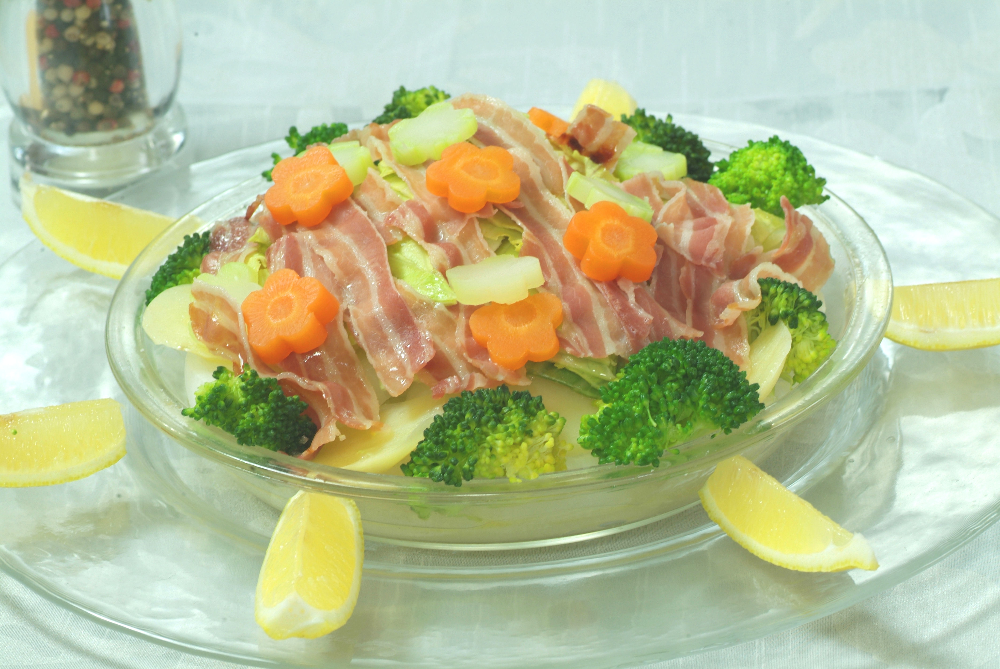

生ベーコンと旬野菜のバター蒸し

材料（4人分）
- ビストロレシピ 生ベーコン ... 1パック
- 新じゃがいも ... 3個
- 新玉ねぎ ... 2個
- 玉ねぎ... 1/4個
- 新キャベツ ... 1/3本
- ブロッコリー ... 1/2株
- レモン ... 1個
- 塩 ... 小さじ1
- 白ワイン ... 1/4カップ
- こしょう ... 少々
- バター ... 30g
作り方（調理時間:20分/目安）
- じゃがいもは縦半分に切り1cm幅の薄切りにする。玉ねぎは5mm幅に横にスライスし、キャベツは食べやすい大きさにざく切りにし、にんじんは型で抜く。ブロッコリーは小房に分けて、茎は型で抜く。
- 耐熱容器に玉ねぎを敷き、じゃがいもとキャベツをのせて、半量の塩を振り、ラップをして、電子レンジで4分加熱する。
- ②に生ベーコンをのせ、にんじんとブロッコリーの茎を散らし、周りにブロッコリーをのせる。白ワインをかけて、半量の塩とこしょうをふり、バターをちぎってのせる。ラップをして電子レンジで7分加熱する。
- 全体にレモンを絞っていただく。
提供
伊藤ハム米久ホールディングス（株）